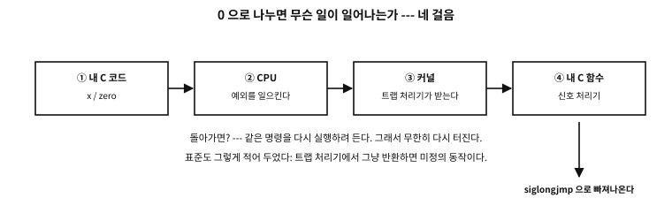
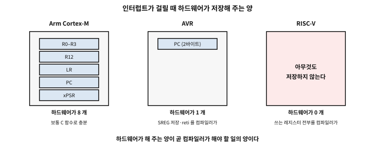
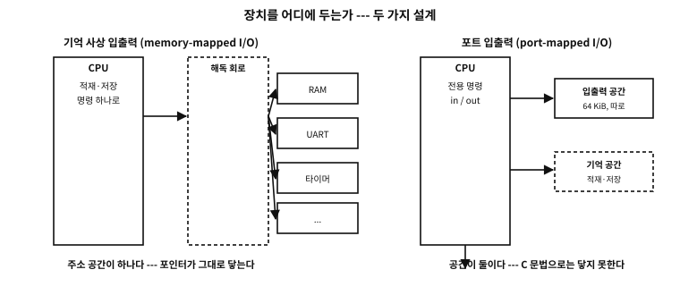

부록 K — OS 없이 도는 C: 인터럽트와 그 기계
이 부록을 여는 말#
먼저 밝혀 둔다. 임베디드는 내 전문이 아니다. 그래서 이 부록은 임베디드 프로그래밍을 가르치지 않는다. 컴퓨터와 C 를 이해하는 데 필요한 범위 안에서만 다룬다 — 그 선을 넘지 않는 것이 이 글의 규율이다.
그런데도 인터럽트를 굳이 한 자리에 모은 이유가 있다.
예전 도스를 쓰던 시절에는 인터럽트가 지금보다 훨씬 사용자 가까이 있었다. 키보드를 누르면 인터럽트가 걸렸고, 마우스가 움직여도, 시계가 한 칸 갈 때도 걸렸다. 운영체제를 부르는 일조차 인터럽트였다 — 파일을 열려면 INT 21h 를 「던졌다」. 상주 프로그램(TSR, terminate and stay resident)은 그 인터럽트 자리를 가로채 자기 코드를 끼워 넣는 방식으로 살았다. 프로그래머가 인터럽트 표의 한 칸에 자기 함수의 주소를 적어 넣는 일이 특별한 재주가 아니라 일상이던 때다.
거기서 더 나아간 것도 있었다. 도스는 한 번에 한 프로그램만 돌리는 물건이었는데, 타이머 인터럽트로 실행을 잘게 끊어 여러 프로그램에 번갈아 나눠 주면 — 그것이 곧 태스크 스위칭(task switching)이고 멀티태스킹이다. ★ 실제로 그런 제품이 있었다. Quarterdeck 의 DESQview(1985)가 그것이고, 386 프로세서가 나오자 QEMM-386 과 묶은 DESQview 386 이 그 칩의 가상 8086 모드(virtual 8086 mode)까지 써서 도스 프로그램 여럿을 창에 띄워 동시에 돌렸다. 운영체제가 아니라 응용 프로그램 하나가 그 일을 해낸 것이다.
지금은 그 층이 커널 아래로 내려가 잘 보이지 않는다. 그래도 인터럽트가 어떤 식으로 이루어지는지 아는 것은 여전히 프로그래머에게 쓸모 있는 통찰을 준다고 생각한다. volatile 이 왜 있는지, 신호 처리기에서 왜 그토록 할 수 있는 일이 적은지, 원자적 연산이 왜 필요한지 — 답이 전부 이 아래층에 있다.
★ 게다가 지금은 귀찮은 코드 작성을 AI 에 맡길 수 있는 시대다. 그럴수록 남는 것은 무엇이 옳은 선택인지 아는 감각이고, 그 감각은 이런 배경지식에서 나온다.
그래서 이 내용은 본문에 넣지 않고 부록으로 독립시킨다. 본문의 흐름에 얹기에는 무겁고, 읽지 않아도 본문은 온전히 성립한다. 관심이 있는 사람만 여기까지 오면 된다.
★ 이 부록에서 다루지 않는 것. 주변장치 설정(UART(universal asynchronous receiver-transmitter)·SPI·I²C 레지스터 표), RTOS, 링커 스크립트 문법, RTOS(real-time operating system), 칩별 초기화 절차, 우선순위 숫자. 이것들이 「임베디드 프로그래밍」이고, 그 자리는 이 책이 아니라 칩 제조사의 문서와 전문서다.
전원이 들어오면 — OS 없이 도는 기계#
지금까지 이 책의 프로그램은 전부 운영체제 위에서 돌았다. main을 누가 부르는지 물었을 때(55장) 답은 「운영체제」였고, 기억을 어디서 얻는지 물었을 때 답은 「운영체제가 준다」였다. 이 부록에서는 그 답이 없는 기계로 간다.
목적은 임베디드 프로그래머가 되는 것이 아니다. C의 이상한 낱말들이 왜 그렇게 생겼는지는 운영체제가 없는 자리에서만 눈에 보이기 때문에 가는 것이다. volatile도, sig_atomic_t도, 재진입도, 「할당자 없이 산다」도, 전부 여기서 태어났다.
OS가 해 주던 일의 목록#
프로그램이 시작될 때 무슨 일이 일어나는지 이 책은 여러 번 나눠 이야기했다. 그것을 한자리에 모으면, 그 목록이 곧 OS 없는 기계에서 우리가 해야 할 일의 목록이다.
| 무엇 | OS 위에서는 | OS 없는 기계에서는 |
|---|---|---|
main 을 부르는 일 | 로더가 부른다 | 리셋 벡터에서 시작한 코드가 부른다 |
초기값 있는 전역(.data) | 로더가 파일에서 읽어 놓는다 | 직접 플래시에서 RAM 으로 복사한다 |
0으로 시작하는 전역(.bss) | 커널이 0인 쪽을 준다 | 직접 0으로 채운다 |
| 스택의 자리 | 커널이 잡아 준다 | 링커 스크립트와 벡터 테이블이 정한다 |
| 힙 | brk·mmap 으로 늘린다 | 있으면 고정 크기, 대개 없다 |
| 표준 출력 | 커널이 파일 서술자를 준다 | 직접 UART 에 바이트를 밀어 넣는다 |
| 프로그램이 끝나는 일 | exit 뒤 커널이 거둔다 | 끝나지 않는다 — 무한 루프가 정상 |
표 105.1 — 운영체제가 해 주던 일, 그리고 OS 없는 기계에서 누가 하는가
표 105.1의 마지막 줄이 특히 낯설다. OS 없는 프로그램은 끝나지 않는 것이 정상이다. main이 반환하면 갈 곳이 없다. 그래서 임베디드 코드의 main은 대개 for (;;)로 끝난다.
「초기화하지 않은 전역은 0」은 공짜가 아니다#
C가 약속하는 것 중에 이런 것이 있다 — 정적 저장 기간의 객체는 초기값을 적지 않으면 0이다. OS 위에서는 이 약속이 저절로 지켜지는 것처럼 보인다. 커널이 새 쪽을 줄 때 0으로 지워 주기 때문이다(그렇게 하지 않으면 남의 비밀이 새어 나간다).
OS가 없으면 누군가 그 일을 해야 한다. 그 누군가가 시작 코드(startup code)다. 대개 이런 모양이다.
extern unsigned __data_start, __data_end, __data_load; /* 링커가 정해 주는 이름 */
extern unsigned __bss_start, __bss_end;
void Reset_Handler(void)
{
unsigned *src = &__data_load, *dst = &__data_start;
while (dst < &__data_end) *dst++ = *src++; /* 초기값을 RAM 으로 옮긴다 */
for (dst = &__bss_start; dst < &__bss_end; ) *dst++ = 0; /* 나머지는 0 으로 */
main();
for (;;) { } /* 돌아올 곳이 없다 */
}★ 이 열 줄이 「C의 약속」과 「기계의 사실」 사이의 거리다. 초기값이 있는 전역은 플래시에 원본이 있고 RAM 에 사본이 있다 — 그래서 같은 변수가 주소를 둘 갖는다. __data_load(플래시의 원본)와 __data_start(RAM 의 자리)가 그 둘이다.
문. 초기값 있는 전역이 많으면 무엇이 늘어나는가?
답. 플래시도 RAM 도 함께 늘어난다 — 원본과 사본이 둘 다 필요하니까. 그래서 임베디드에서는 「큰 배열을 0이 아닌 값으로 초기화하는 것」이 두 배로 비싸다. .bss에 두고 실행 중에 채우는 쪽이 플래시를 아낀다. 데스크톱에서는 아무도 신경 쓰지 않는 종류의 계산이다.
리셋 벡터(reset vector) — 기계가 처음 읽는 자리#
전원이 들어오면 CPU 는 정해진 자리를 읽는다. 그 자리가 무엇이냐는 칩마다 다르다.
- Arm Cortex-M: 주소 0의 첫 워드를 읽어 스택 포인터로 삼고, 두 번째 워드를 읽어 그리로 뛴다. 곧 벡터 테이블(vector table)의 0번 칸이 코드가 아니라 숫자다.
- AVR: 플래시의 0번지에서 실행을 시작한다. 그 자리에는 대개
jmp가 한 줄 있다. - RISC-V: 구현이 정한 리셋 주소에서 시작한다. 그 뒤의 모든 트랩은
mtvec이 가리키는 곳으로 간다.
★ 세 칩이 공통으로 말하는 것은 이것이다 — 시작 주소는 약속이지 코드가 아니다. 기계는 「여기를 읽어라」만 알고, 그 자리에 무엇을 둘지는 링커(56장)가 정한다. 그래서 OS 없는 프로젝트에는 링커 스크립트가 반드시 있다. 이 책은 그 문법을 다루지 않는다 — 다만 왜 그런 파일이 존재하는지는 이제 말할 수 있다.
여기서 남기는 것#
복습 정리
- C의 약속(0으로 시작하는 전역, 스택,
main호출) 중 어느 것도 언어가 혼자 지키지 않는다. 누군가 — 커널이든 시작 코드든 — 가 실제로 일한다. - 그 일을 우리가 하게 되면, 같은 변수가 플래시와 RAM 에 각각 자리를 두는 것 같은 물리적 사실이 코드에 드러난다.
- 다음 절은 이 기계에서 「흐름이 가로채이는 일」을 본다. 그것이 인터럽트다.
인터럽트 — 흐름을 가로채는 장치#
프로그램은 한 줄씩 차례로 실행된다 — 이 책이 지금까지 기대 온 그림이다. 그 그림이 깨지는 자리가 하나 있다. 바깥이 끼어드는 것이다.
이 절은 그 장치를 본다. 그리고 곧 알게 되겠지만, 이것은 이미 써 온 것이다 — SIGSEGV를 본 적이 있다면.
세 낱말을 먼저 가른다#
「인터럽트」 하나로 뭉뚱그리면 뒤에 나올 규칙들이 이상해 보인다. 갈래가 셋이다.
| 갈래 | 누가 일으키나 | 시점 | 보기 |
|---|---|---|---|
| 인터럽트(interrupt) | 바깥 장치 | 비동기 — 어느 명령에서든 | 타이머, 키보드, 네트워크 |
| 예외(exception) | 실행 중인 그 명령 | 동기 — 그 자리에서 | 0으로 나눔, 없는 쪽 접근 |
| 트랩(trap) | 명령이 일부러 | 동기·의도적 | 시스템 호출, 중단점 |
표 105.2 — 인터럽트·예외·트랩 — 셋을 가르는 축
★ 차이가 실제로 중요한 이유: 비동기인 것은 「내 코드와 무관한 시점」에 오고, 동기인 것은 「내가 방금 한 짓의 결과」다. 그래서 전자는 언제 와도 프로그램이 온전해야 한다는 요구를 낳고, 후자는 돌아갈 곳이 없다는 문제를 낳는다.
RISC-V 는 이 구분을 하드웨어에 새겨 두었다. 셋을 통틀어 「트랩」이라 부르되, 비동기인 것만 인터럽트라 하고, 벡터 모드에서 동기 예외는 한 자리로 모으고 인터럽트만 원인별로 흩어 보낸다.
이미 써 본 적이 있다 — 하드웨어 예외가 C 함수까지 오는 길#
OS 위에서도 이 길은 열려 있다. 0으로 나누면 CPU 가 예외를 일으키고, 커널이 그것을 받아 신호로 바꾸고, 그 신호가 우리가 등록한 C 함수를 부른다.

그림 105.1 — 하드웨어 예외가 내 C 함수까지 오는 길, 그리고 돌아갈 수 없는 이유.
examples/apx-baremetal/trap_to_c.c
/* 하드웨어 예외가 C 함수까지 올라오는 길 --- OS 위에서 그 길을 눈으로 본다. */
#define _POSIX_C_SOURCE 200809L
#include <setjmp.h>
#include <signal.h>
#include <stdio.h>
static sigjmp_buf escape;
static volatile sig_atomic_t why = 0;
static void *where = NULL;
/* 처리기는 하드웨어가 준 것을 받는다 --- 원인 번호와 터진 명령의 주소 */
static void on_trap(int sig, siginfo_t *si, void *ctx)
{
(void)sig; (void)ctx;
why = si->si_code;
where = si->si_addr;
/* 트랩 처리기에서 그냥 돌아오는 것은 미정의 동작이다(C23 7.14.1.1 p3).
터진 명령을 다시 실행하려 들기 때문이다 --- 그래서 뛰어서 빠져나온다. */
siglongjmp(escape, 1);
}
int main(void)
{
struct sigaction sa = {0};
sa.sa_sigaction = on_trap;
sa.sa_flags = SA_SIGINFO;
sigaction(SIGFPE, &sa, NULL);
sigaction(SIGSEGV, &sa, NULL);
volatile int zero = 0, x = 1;
if (sigsetjmp(escape, 1) == 0) {
x = x / zero; /* CPU 가 예외를 일으킨다 */
puts("this line is never reached");
}
printf("integer divide: si_code=%d (FPE_INTDIV=%d), faulting instruction=%s\n",
(int)why, FPE_INTDIV, where ? "reported" : "not reported");
int *nowhere = NULL;
if (sigsetjmp(escape, 1) == 0) {
*nowhere = 1; /* 같은 길, 다른 예외 */
puts("nor is this one");
}
printf("null store : si_code=%d (SEGV_MAPERR=%d), address=%s\n",
(int)why, SEGV_MAPERR, where == NULL ? "0x0" : "non-zero");
puts("");
puts("the path was: CPU exception -> kernel trap handler -> signal -> this C function.");
puts("three of the six standard signals are hardware exceptions:");
puts(" SIGFPE (floating-point exception), SIGILL (illegal instruction),");
puts(" SIGSEGV (segmentation violation). SIGINT is literally named 'interrupt'.");
return 0;
}
실행 결과
integer divide: si_code=1 (FPE_INTDIV=1), faulting instruction=reported
null store : si_code=1 (SEGV_MAPERR=1), address=0x0
the path was: CPU exception -> kernel trap handler -> signal -> this C function.
three of the six standard signals are hardware exceptions:
SIGFPE (floating-point exception), SIGILL (illegal instruction),
SIGSEGV (segmentation violation). SIGINT is literally named 'interrupt'.
세 가지를 짚는다.
첫째, 하드웨어가 준 정보가 그대로 올라온다. si_code가 「정수 나눗셈이었다」를 말하고, 터진 명령의 주소까지 온다. 커널이 지어낸 것이 아니라 CPU 가 기록한 것이다.
둘째, 표준 신호 여섯 중 셋이 하드웨어 예외다. SIGFPE(부동소수점 예외), SIGILL(잘못된 명령), SIGSEGV(세그멘테이션 위반). 그리고 SIGINT는 이름 자체가 인터럽트다. 곧 인터럽트는 이미 C 표준 안에 들어와 있다.
셋째, 그냥 돌아오면 안 된다. 표준이 못박아 두었다 — 처리기가 반환할 때 신호가 SIGFPE·SIGILL·SIGSEGV 이면 동작은 미정의다. 이유는 하드웨어에 있다. 0으로 나눔은 x86 에서 폴트(fault)라, 돌아가면 같은 명령을 다시 실행하려 든다. 그래서 시연이 siglongjmp로 빠져나온다.
인터럽트는 세지 않는다#
흔한 오해. 밀린 인터럽트는 쌓였다가 한꺼번에 처리된다
재어 보면 답이 나온다.
examples/apx-baremetal/no_queue.c
/* 인터럽트는 세지 않는다 --- 대기 비트가 하나뿐이다. */
#define _POSIX_C_SOURCE 200809L
#include <signal.h>
#include <stdio.h>
static volatile sig_atomic_t runs = 0;
static void tick(int s) { (void)s; runs++; }
int main(void)
{
signal(SIGUSR1, tick);
sigset_t all, saved;
sigfillset(&all);
sigprocmask(SIG_BLOCK, &all, &saved); /* 막아 둔다 --- 하드웨어의 '금지'에 해당 */
for (int i = 0; i < 10; i++) raise(SIGUSR1); /* 열 번 요청한다 */
printf("raised 10 times while blocked\n");
sigprocmask(SIG_SETMASK, &saved, NULL); /* 푼다 --- 밀린 것이 쏟아질까? */
printf("handler ran %d time(s) after unblocking\n", (int)runs);
puts("");
puts("a pending interrupt is a bit, not a counter: ten requests, one delivery.");
puts("hardware behaves the same way, which is why a handler must ask the device");
puts("what happened rather than assume it ran once per event.");
return 0;
}
실행 결과
raised 10 times while blocked
handler ran 1 time(s) after unblocking
a pending interrupt is a bit, not a counter: ten requests, one delivery.
hardware behaves the same way, which is why a handler must ask the device
what happened rather than assume it ran once per event.
열 번 요청했는데 처리기는 한 번 돌았다. 대기 중이라는 사실은 비트 하나로 적히지, 개수로 적히지 않는다. 하드웨어도 같다 — 장치가 인터럽트를 걸어 둔 채 또 걸면 비트는 이미 1이다.
★ 그래서 임베디드 코드의 규율이 하나 생긴다. 처리기는 「몇 번 왔는지」를 세지 말고, 장치에게 「무슨 일이 있었는지」를 물어야 한다. 버퍼에 몇 바이트가 쌓였는지는 장치의 레지스터가 알고 있지, 처리기가 불린 횟수가 알고 있지 않다.
처리기를 C 로 쓸 수 있는가 — 칩마다 답이 다르다#
이제 이 부록의 핵심 질문이다. 인터럽트가 오면 CPU 는 지금 하던 일을 멈추고 처리기로 뛴다. 그런데 하던 일은 레지스터에 들어 있다. 그것을 누가 지키는가?

그림 105.2 — 칩마다 다른 「하드웨어가 저장해 주는 양」 — 그 차이가 컴파일러의 일을 정한다.
| Arm Cortex-M | AVR | RISC-V | |
|---|---|---|---|
| 하드웨어가 저장 | R0–R3, R12, LR, PC, xPSR — 여덟 개 | PC 두 바이트뿐 | 없음 (mepc·mcause 에 기록만) |
| 컴파일러가 할 일 | 없다 | SREG 등 저장, reti 로 반환 | 쓰는 레지스터 전부, mret 로 반환 |
| 처리기를 적는 법 | 보통 C 함수 | ISR() / __attribute__((signal)) | __attribute__((interrupt("machine"))) |
| 중첩 기본값 | 우선순위대로 허용 | 금지 (I 비트를 지운다) | 금지 (MIE ← 0) |
표 105.3 — 인터럽트가 왔을 때 무엇을 누가 저장하는가
★ 하드웨어가 저장해 주는 양이 곧 컴파일러가 해야 할 일의 양이고, 그 합이 「C 함수를 그대로 처리기로 쓸 수 있는가」를 정한다.
Cortex-M 이 저장하는 여덟 개가 왜 하필 그것들인가 하면 — 호출 규약에서 「함수가 망가뜨려도 되는」 레지스터 목록이기 때문이다. 컴파일러는 어차피 그 목록을 망가뜨려도 된다고 생각하고 코드를 낸다. 하드웨어가 미리 저장해 주니, 보통 함수가 그대로 처리기가 된다.
AVR 은 정반대다. 하드웨어는 돌아갈 주소만 밀어 넣는다. 상태 레지스터조차 저장해 주지 않으므로, 컴파일러가 특별한 프롤로그를 만들어야 하고 마지막 명령도 ret이 아니라 reti(전역 인터럽트 허용 비트를 함께 복원)여야 한다.
RISC-V 는 더 극단이다. 레지스터를 하나도 저장해 주지 않는다. 하드웨어가 하는 일은 「돌아갈 주소를 mepc에, 원인을 mcause에 적고, 인터럽트를 끄고, mtvec으로 뛴다」 뿐이다.
★ 이것이 ABI(application binary interface) 이야기다. 57장에서 소스에 적히지 않은 약속을 다뤘다 — 인자를 어느 레지스터에 싣는가, 구조체를 어떻게 돌려주는가. 인터럽트는 그 약속의 가장 바깥 경계다. 여기서는 약속의 절반을 하드웨어가 지키고, 나머지 절반을 컴파일러가 지운다. 그 경계선이 칩마다 다른 자리에 그어져 있다.
처리기 안에서 할 수 있는 일이 왜 그렇게 적은가#
C 표준은 신호 처리기가 할 수 있는 일을 아주 좁게 정해 두었다. 정적 저장 기간이나 스레드 저장 기간의 객체는 volatile sig_atomic_t에 값을 대입하는 것 말고는 건드리지 못한다. 부를 수 있는 표준 함수도 다섯 갈래뿐이다 — abort·_Exit·quick_exit, 자물쇠 없는 원자적 연산, 그리고 atomic_is_lock_free(이쪽은 어떤 원자 타입이든 물어도 된다), 마지막으로 지금 처리 중인 그 신호에 대한 signal 다시 부르기. (C23 은 여기에 하나를 더했다 — constexpr로 선언된 객체는 읽어도 된다. 어차피 바뀌지 않으니까.)
왜 이렇게 좁은가. 답의 절반은 「자물쇠 없는」이라는 조건에 있다.
examples/apx-baremetal/lockfree.c
/* 처리기 안에서 왜 '자물쇠 없는' 원자적 연산만 허용되는가. */
#include <stdatomic.h>
#include <stdint.h>
#include <stdio.h>
static _Atomic uint32_t small;
static _Atomic unsigned __int128 big;
int main(void)
{
printf("ATOMIC_INT_LOCK_FREE = %d (2 = always lock-free)\n", ATOMIC_INT_LOCK_FREE);
printf("ATOMIC_LLONG_LOCK_FREE = %d\n", ATOMIC_LLONG_LOCK_FREE);
printf("32-bit atomic is lock-free : %s\n",
atomic_is_lock_free(&small) ? "yes" : "no");
printf("128-bit atomic is lock-free: %s\n",
atomic_is_lock_free(&big) ? "yes" : "no");
puts("");
puts("a non-lock-free atomic takes a lock behind your back.");
puts("if the code an interrupt suspended was holding that same lock,");
puts("the handler waits for a lock only the interrupted code can release.");
puts("that is why C23 7.14.1.1 allows <stdatomic.h> in a handler only when");
puts("the atomic arguments are lock-free.");
return 0;
}
실행 결과
ATOMIC_INT_LOCK_FREE = 2 (2 = always lock-free)
ATOMIC_LLONG_LOCK_FREE = 2
32-bit atomic is lock-free : yes
128-bit atomic is lock-free: no
a non-lock-free atomic takes a lock behind your back.
if the code an interrupt suspended was holding that same lock,
the handler waits for a lock only the interrupted code can release.
that is why C23 7.14.1.1 allows <stdatomic.h> in a handler only when
the atomic arguments are lock-free.
128비트 원자적 연산은 자물쇠를 쓴다. 그런데 그 자물쇠를 잡고 있던 코드가 방금 인터럽트된 바로 그 코드라면, 처리기는 자기 자신이 놓아야 할 자물쇠를 기다린다. 교착이다. 그래서 표준은 자물쇠 없는 것만 허용한다.
답의 나머지 절반은 폭에 있다. 레지스터보다 넓은 값은 대입 하나가 명령 여럿이 되고, 인터럽트는 명령 사이에 떨어진다. 8비트 AVR 에서 16비트 변수를 읽으면 두 번에 나눠 읽는데, 그 사이에 처리기가 그 변수를 바꾸면 절반만 새 값인 수 — 찢어진 값(torn value)을 얻는다. sig_atomic_t가 언어에 있는 이유가 이것이다 (81장).
여기서 남기는 것#
복습 정리
- 인터럽트·예외·트랩은 다른 것이고, 그 차이가 규칙의 모양을 정한다.
- 하드웨어 예외는 이미 C 로 올라오고 있다 — 표준 신호 여섯 중 셋이 그것이다.
- 처리기를 C 로 쓸 수 있는지는 하드웨어가 무엇을 저장해 주는가가 정한다.
- 처리기의 좁은 규칙들은 임의가 아니라 교착과 찢어짐을 피하려는 것이다.
레지스터를 만지는 법 — 기억 사상 입출력과 volatile#
앞 절에서 인터럽트가 흐름을 가로채는 것을 보았다. 그 인터럽트를 걸어 두는 일과, 장치에게 말을 거는 일이 남았다. 둘 다 같은 방식으로 한다 — 정해진 주소에 값을 읽고 쓴다.
장치가 주소를 차지한다#
OS 위에서 주소는 전부 기억이었다. 읽으면 지난번에 쓴 값이 나오고, 쓰면 그대로 남는다. 그것이 이 책이 5장에서 세운 기억의 그림이다.
OS 없는 기계에서는 그 그림이 반만 맞다. 어떤 주소는 기억이 아니라 장치다.
| 그 주소에 하는 일 | 기억이라면 | 장치라면 |
|---|---|---|
| 쓴다 | 값이 남는다 | 무슨 일이 벌어진다 — 문자가 나가고, 핀이 흔들린다 |
| 읽는다 | 쓴 값이 나온다 | 지금의 상태가 나온다 — 매번 다를 수 있다 |
| 두 번 읽는다 | 같은 값 | 다른 값 — 그리고 읽는 행위가 상태를 바꾸기도 한다 |
| 안 읽고 넘어간다 | 아무 일 없다 | 필요한 일이 안 일어난다 — 인터럽트가 안 지워진다 |
표 105.4 — 같은 주소를 만져도 — 기억일 때와 장치일 때
표 105.4의 마지막 줄이 무섭다. 어떤 장치는 「상태 레지스터를 읽어야 인터럽트 요청이 지워지는」 설계를 한다. 그 읽기를 컴파일러가 「값을 안 쓰니 지워도 되겠다」고 판단해 없애면, 인터럽트가 영원히 다시 걸린다. 프로그램은 처리기 안에서 무한히 맴돈다.
이름을 붙이자 — 기억 사상 입출력(memory-mapped I/O)#
방금 본 것에 이름이 있다. 기억 사상 입출력(寫像, memory-mapped I/O)이다. 장치의 레지스터를 CPU 의 주소 공간 안으로 사상해(mapping) 넣는 방식을 말한다. 「사상」은 수학에서 한 집합의 원소를 다른 집합의 원소에 대응시키는 그 사상이다 — 주소 하나가 기억의 한 칸이 아니라 장치의 레지스터 하나에 대응되는 것이다.
기계 안에서 벌어지는 일은 이렇다. CPU 는 주소를 내놓을 뿐 그 끝에 무엇이 있는지 모른다. 주소를 받아 보고 「이 범위는 RAM, 이 범위는 UART, 이 범위는 타이머」로 갈라 보내는 것은 그 옆의 해독 회로다. 그러니 *(volatile uint8_t *)0x10000000 = 'A' 는 CPU 에게는 그냥 바이트 하나를 쓰는 일이고, 그 바이트가 화면에 글자로 나타나는 것은 그 주소가 어디로 배선되어 있느냐의 문제다.
★ 이것이 이 책에 중요한 이유가 있다. 장치를 주소로 다루기 때문에 C 의 포인터가 그대로 장치에 닿는다. 특별한 문법도, 새 연산자도 필요 없다 — volatile 하나만 붙이면 된다.
그런데 이 방식이 유일한 것은 아니다. 갈래가 둘이다.

그림 105.3 — 주소 공간이 하나인 설계와 둘인 설계.
| 기억 사상 입출력 (memory-mapped I/O) | 포트 입출력 (port-mapped I/O) | |
|---|---|---|
| 장치가 사는 곳 | 기억과 같은 주소 공간 | 기억과 분리된 입출력 공간 |
| 무엇으로 만지나 | 보통의 적재·저장 명령 | 전용 명령 — x86 의 in·out |
| C 에서 | 포인터로 닿는다 | 닿지 못한다 — 인라인 어셈블리나 컴파일러 확장이 필요 |
| 쓰는 곳 | Arm·RISC-V 등 거의 모두, x86 도 대부분 | x86 의 옛 장치들(64 KiB 공간) |
표 105.5 — 장치에 닿는 두 가지 설계
표 105.5의 셋째 줄이 핵심이다. 포트 입출력에는 C 로 적을 방법이 표준에 없다. 그래서 그쪽을 쓰는 코드는 반드시 어셈블리나 컴파일러 확장으로 내려간다. 오늘날 새 하드웨어가 기억 사상 쪽을 택하는 이유 중 하나가 이것이다 — 평범한 언어로 다룰 수 있다.
대가도 있다. 그 주소들은 기억이 아니므로, 기억이라고 가정하고 하는 일들이 전부 위험해진다. 캐시에 담아 두면 다음에 읽을 때 낡은 값을 보고(그래서 그 구역은 캐시를 끄거나 「캐시 안 함」으로 표시한다), 컴파일러가 접근을 지우거나 미루면 장치가 명령을 못 받는다. 뒤의 문제를 언어 안에서 막는 장치가 바로 다음 절의 volatile 이다.
★ 번역에 대하여. 「기억 사상 입출력」은 뜻으로는 정확한 옮김이지만 「사상」이라는 낱말이 낯설 수 있고, 무엇보다 훨씬 익숙한 동음이의어(思想)가 있다. 그래서 이 책은 이 용어를 처음 쓸 때 반드시 원문을 함께 적는다 — 기억 사상 입출력(memory-mapped I/O). 실무에서는 「메모리 맵드 I/O」라고 부르는 일이 더 많다는 것도 알아 두면 좋다.
반대편 — 명령으로 입출력을 밝히는 방식(port-mapped I/O)#
기억 사상 입출력이 「주소로 구별한다」면, 반대편은 「명령으로 구별한다」. x86 이 그쪽이다. 이 CPU 에는 기억을 만지는 명령(mov)과 별개로 장치를 만지는 명령이 따로 있다 — in 과 out 이다. 그리고 그 명령이 닿는 주소들은 기억과 다른, 따로 있는 64 KiB 짜리 입출력 공간이다.
왜 이런 것이 있는가. 8비트 시절의 사정이다. 주소 선이 16개뿐이던 기계에서 기억 공간은 이미 빠듯했고, 장치에 그 귀한 자리를 떼어 주기가 아까웠다. 그래서 「장치는 따로 센다」는 설계가 나왔고, 인텔이 8080 에서 쓴 그 방식이 8086 을 거쳐 오늘의 x86 까지 그대로 내려왔다. ★ 곧 이것은 좋은 설계라서 남은 것이 아니라 호환을 지키느라 남은 것이다.
이 방식이 C 에 무엇을 뜻하는지가 이 절의 요점이다.
★ C 에는 입출력 공간에 닿는 문법이 없다. 포인터는 기억 주소를 가리키는 물건이고, 적재·저장 명령으로 번역된다. in·out 을 낼 방법이 표준 C 에는 없다.
그래서 그쪽을 다루는 코드는 반드시 언어 밖으로 내려간다. 리눅스·GCC 에서는 인라인 어셈블리로 이렇게 적는다.
static inline void outb(uint16_t port, uint8_t v)
{ __asm__ volatile ("outb %0, %1" :: "a"(v), "Nd"(port)); }
static inline uint8_t inb(uint16_t port)
{ uint8_t v; __asm__ volatile ("inb %1, %0" : "=a"(v) : "Nd"(port)); return v; }컴파일해 보면 정말로 그 명령이 나온다 — 함수 호출도, 기억 접근도 아닌 전용 명령이다.
kbd:
mov eax, -82
outb al, 100 ; 0x64 --- 키보드 제어기의 명령 포트
inb 96, al ; 0x60 --- 키보드 제어기의 자료 포트
ret여기에 하나가 더 붙는다. 이 명령들은 특권이 있어야 쓸 수 있다. 보통의 응용 프로그램이 실행하면 그 자리에서 예외가 난다(리눅스에서는 SIGSEGV). 커널이나 드라이버, 또는 특별히 권한을 얻은 프로그램만 쓸 수 있다 — 아무나 디스크 제어기에 명령을 쏘게 둘 수는 없기 때문이다.
실제 사례. 1981년의 포트 배치가 2026년의 기계에 그대로 있다
리눅스에서 /proc/ioports 를 열면 커널이 잡아 둔 입출력 포트 목록이 나온다. 이 글을 쓰는 기계에서 확인하니 pic1·pic2(인터럽트 제어기), timer0·timer1, keyboard, rtc_cmos, dma1·dma2, fpu, serial, iTCO_wdt(워치독) 같은 이름들이 그대로 있었다. 1981년 IBM PC 의 장치 배치가 2026년의 기계에 아직 남아 있는 것이다.
(주소 숫자는 보이지 않았다 — 권한 없는 사용자에게는 커널이 가린다. 그것도 이 자리가 특권 영역이라는 증거다.)
고전적인 자리 몇 개는 외워 둘 만하다. 옛 코드를 읽을 때 그대로 나온다.
| 포트 | 무엇 | 어디서 만나나 |
|---|---|---|
0x20, 0xA0 | 인터럽트 제어기(PIC) | 인터럽트를 다 처리했다고 알리는 코드(EOI) |
0x40–0x43 | 타이머(PIT) | 도스 시절 타이머 주기를 바꾸던 코드 |
0x60, 0x64 | 키보드 제어기 | INT 09h 처리기가 읽던 자리 |
0x70, 0x71 | CMOS·실시간 시계 | 시각을 읽고 설정 값을 꺼내던 자리 |
0x3F8 | 직렬 포트(COM1) | 부팅 로그를 밖으로 뽑는 통로. 지금도 서버에서 쓴다 |
표 105.6 — 옛 코드에서 그대로 만나는 고전적 포트 자리
★ 그래서 두 방식의 차이는 취향이 아니라 언어가 닿는가의 문제다. 기억 사상 입출력이면 평범한 C 로 장치를 다룰 수 있고, 포트 입출력이면 어셈블리가 필요하다. Arm 과 RISC-V 가 아예 입출력 공간을 두지 않은 것도 그래서다 — 오늘의 설계는 「전부 주소로」 쪽으로 정리되었다.
그래서 volatile 이 있다#
이 책은 volatile을 「최적화가 접근을 지우지 못하게 하는 것」으로 소개했다. 맞지만 절반이다. 표준이 이 낱말을 설명하며 드는 예가 정확히 둘인데, 둘 다 이 장의 세계다.
즉 volatile은 최적화를 막으려고 만든 낱말이 아니라, 「이 주소는 기억이 아니다」를 컴파일러에게 알리는 낱말이다. 최적화를 막는 것은 그 결과일 뿐이다.
전형적인 모양은 이렇다.
#define UART0 ((volatile uint8_t *)0x10000000u) /* 이 주소는 장치다 */
static void uart_putc(char c) { *UART0 = (uint8_t)c; }volatile이 없으면 컴파일러는 같은 주소에 여러 번 쓰는 코드를 마지막 한 번으로 줄일 수 있다. 기억이라면 옳은 최적화다. UART 라면 문자를 잃는다.
내 기억을 바꾸는 것이 인터럽트만은 아니다 — DMA#
volatile 이 필요한 자리가 하나 더 있다. 직접 기억 접근(DMA, direct memory access)이다. DMA 는 CPU 를 거치지 않고 장치와 기억 사이에서 바이트를 직접 옮기는 장치다. 「이 주소에서 512바이트를 읽어 저 장치로 보내라」고 시켜 두면, CPU 가 다른 일을 하는 동안 그 일이 따로 진행된다.
C 의 눈으로 보면 이것은 기이한 일이다. 내 코드가 건드린 적 없는 배열의 내용이 어느 순간 바뀌어 있다. 컴파일러는 그럴 리 없다고 생각한다 — 그 배열을 아무도 쓰지 않았으니 방금 읽은 값을 레지스터에 두고 다시 써도 된다고 판단한다. 그래서 DMA 가 채우는 버퍼는 volatile 이어야 한다.
★ 그리고 여기서 캐시가 한 겹 더 끼어든다. DMA 는 대개 기억에 직접 쓰는데 CPU 는 캐시를 본다. 그래서 DMA 가 채운 버퍼를 읽기 전에 그 구역의 캐시를 무효화하고, DMA 로 내보낼 버퍼는 미리 캐시를 비워야 하는 기계가 있다. volatile 은 컴파일러를 붙잡을 뿐 캐시를 어쩌지 못한다 — 언어의 장치와 하드웨어의 장치는 다른 층이다.
volatile 이 해 주지 않는 것#
흔한 오해. `volatile` 이면 여러 흐름이 함께 만져도 안전하다
volatile은 동시성 도구가 아니다. 접근을 지우지 못하게 할 뿐, 그 접근을 나눌 수 없게 만들지도, 다른 코어에서 보이는 순서를 정하지도 않는다. 그 일을 하는 것은 원자적 타입과 메모리 순서다(85장).| 무엇 | volatile | 필요한 것 |
|---|---|---|
| 접근이 지워지지 않게 | 해 준다 | — |
접근 순서가 뒤바뀌지 않게 (다른 volatile 접근끼리) | 해 준다 | — |
| 나눌 수 없는 하나의 동작으로 | 안 해 준다 | sig_atomic_t, 자물쇠 없는 원자적 타입, 또는 인터럽트를 잠깐 끄기 |
| 다른 코어에서 보이는 순서까지 | 안 해 준다 | 원자적 연산과 메모리 순서 |
표 105.7 — volatile 이 해 주는 것과 해 주지 않는 것
표 105.7의 셋째 줄이 앞 절의 「찢어짐」과 같은 이야기다. volatile uint32_t를 8비트 기계에서 읽으면 네 번에 나눠 읽는다. volatile은 그 네 번이 사라지지 않게 해 줄 뿐, 한 덩어리가 되게 해 주지 못한다.
인터럽트를 잠깐 끄는 것 — 가장 오래된 자물쇠#
OS 없는 기계에는 뮤텍스가 없다. 처리기와 주 루프가 같은 자료를 만질 때 쓰는 가장 기본적인 방법은 인터럽트를 잠깐 끄는 것이다.
uint32_t snapshot;
uint8_t saved = save_and_disable_interrupts(); /* 칩마다 이름이 다르다 */
snapshot = shared_counter; /* 이 사이에는 처리기가 못 들어온다 */
restore_interrupts(saved);★ 두 가지를 반드시 챙긴다. 첫째, 끈 상태를 짧게 유지한다 — 그 사이에 온 인터럽트는 늦어지고, 늦어진 만큼이 그대로 지연이 된다. 둘째, 이전 상태를 저장했다가 되돌린다. 무조건 「켜기」로 끝내면, 이미 꺼져 있던 자리에서 불렀을 때 남의 규약을 깨뜨린다.
비트 필드로 하드웨어 레지스터를 그리지 말 것#
레지스터의 각 비트에 이름이 있으니 구조체 비트 필드가 딱 맞아 보인다. 함정이다.
반례. 하드웨어 레지스터를 구조체 비트 필드로 그린다
struct ctrl { /* ← 이렇게 하지 않는다 */
unsigned enable : 1;
unsigned mode : 3;
unsigned : 4;
};하드웨어의 비트 자리는 고정인데, 이 선언이 어느 비트를 만질지는 컴파일러가 정한다.
이유는 이 책이 49장에서 이미 말한 것과 같다. 비트 필드의 배치는 구현이 정한다 — 어느 끝에서부터 채우는지, 어떤 저장 단위를 쓰는지가 컴파일러와 판마다 다를 수 있다. 하드웨어의 비트 자리는 고정인데 언어 쪽이 흔들린다.
실무의 방식은 시프트와 마스크다. 투박해 보이지만 어느 컴파일러에서도 같은 비트를 만진다.
#define CTRL_ENABLE (1u << 0)
#define CTRL_MODE(x) (((x) & 0x7u) << 1)
*CTRL = CTRL_ENABLE | CTRL_MODE(2);여기에 하나 더 — 읽고-고쳐-쓰기는 원자적이지 않다. *CTRL |= BIT는 읽기·계산·쓰기 셋이고, 그 사이에 처리기가 같은 레지스터를 건드리면 한쪽 변경이 사라진다. 그래서 장치들은 흔히 세트 레지스터와 클리어 레지스터를 따로 둔다 — 한 번의 쓰기로 끝나게.
여기서 남기는 것#
복습 정리
- 어떤 주소는 기억이 아니라 장치다. 그 사실을 언어에 알리는 낱말이
volatile이다. volatile은 「지우지 마라」이지 「나눌 수 없게 하라」가 아니다.- OS 없는 기계의 가장 기본적인 상호 배제는 인터럽트를 잠깐 끄는 것이고, 그 비용은 지연이다.
- 하드웨어 레지스터는 비트 필드가 아니라 시프트와 마스크로 다룬다.
제약 속의 C, 그리고 되가져가기#
앞의 세 절은 「OS 가 없으면 무엇이 달라지는가」였다. 이 절은 그 달라진 자리에서 C 를 어떻게 쓰는지, 그리고 ★ 거기서 배운 것을 OS 위로 되가져가면 무엇이 달라 보이는지를 본다. 마지막 절이 이 부록의 값을 정한다.
타이머 인터럽트 하나를 끝까지#
앞 장들의 조각을 모으면 작은 프로그램 하나가 된다. 타이머가 1초마다 인터럽트를 걸고, 처리기는 깃발만 세우고 나오고, 일은 주 루프가 한다.
examples/apx-riscv/run.sh
#!/bin/sh
# RISC-V 베어메탈 --- *진짜 기계 모형에서* 돌린다.
#
# ★ 이 예제는 x86 의 gcc 로는 빌드되지 않는다(`interrupt` 속성의 인자부터 다르다).
# 그것이 이 부록의 요점이기도 하다 --- 베어메탈 C 는 대상 기계를 고른 다음에야
# 말이 된다. 그래서 교차 컴파일러로 짓고 QEMU 의 virt 기계에서 돌린다.
# ★ 도구가 없으면 건너뛰되 *건너뛴다고 말한다.* 조용히 빠지면 독자는 이것이
# 돌아 본 적 없는 코드라는 사실을 모른다.
set -eu
cd "$(dirname "$0")"
ws=$(cd ../../.. && pwd)
rv="$ws/usr/toolchains/riscv-gcc/bin/riscv-none-elf-gcc"
qemu="$ws/usr/toolchains/qemu-riscv/bin/qemu-system-riscv64"
if [ ! -x "$rv" ] || [ ! -x "$qemu" ]; then
echo "(no RISC-V toolchain here: this example was not built or run)"
exit 0
fi
"$rv" -march=rv64imac_zicsr -mabi=lp64 -mcmodel=medany -O2 -Wall -Wextra \
-nostdlib -nostartfiles -T rv_virt.ld rv_start.S rv_timer.c -o ./rv.elf
timeout 60 "$qemu" -machine virt -bios none -nographic -kernel ./rv.elf
rm -f ./rv.elf
실행 결과
waiting for the timer...
tick
tick
tick
three ticks; done
에뮬레이터(QEMU 의 RISC-V virt 기계)에서 실제로 돌린 결과다. 3초가 흐르고 세 번 째깍인 뒤 스스로 꺼진다 — 하드웨어를 사지 않고도 이 부록의 예제가 다른 장과 같은 규율을 지킨다.
이 마흔 줄에 이 부록의 이야기가 다 들어 있다.
volatile uint8_t *로 UART 주소를 만진다 — 셋째 절.__attribute__((interrupt("machine")))이 컴파일러에게 레지스터 저장과mret을 시킨다 — 둘째 절. RISC-V 는 하드웨어가 아무것도 저장해 주지 않으니까.- 처리기는 다음 알람을 예약하고
ticks++만 한다. 출력은 주 루프가 한다. - 할 일이 없으면
wfi로 잔다 — 인터럽트가 깨울 것을 알기 때문에 기다림이 공짜다. main이 끝나지 않는다 — 첫 절에서 본 그대로.
실제 사례. 타이머는 설정했는데 아무 일도 일어나지 않았다
이 예제를 처음 돌렸을 때의 일이다. 타이머는 설정했고 mtvec 도 적었는데, 프로그램이 그대로 멈춰 있었다. 원인은 한 줄이었다 — 처리기 함수가 2바이트 경계에 놓여 있었던 것이다.
mtvec 의 하위 두 비트는 주소가 아니라 MODE 필드다(0이면 직접, 1이면 벡터). 압축 명령을 쓰는 기계에서 C 함수는 2바이트 경계에 놓일 수 있고, 그 주소를 그대로 쓰면 MODE 가 2 — 예약된 값 — 가 되어 트랩이 엉뚱한 곳으로 간다. 에뮬레이터의 로그를 켜서야 보였다: 트랩이 주소 0 으로 뛰어 그 자리에서 인출 폴트가 무한히 반복되고 있었다.
★ 그래서 처리기에 aligned(4) 를 붙인다. 그리고 이 사고가 이 부록의 이야기를 한 번 더 증명한다 — 주소의 낮은 비트가 주소가 아닐 수 있다. 정렬은 성능 문제가 아니라 때로 의미의 문제다.
★ 처리기가 깃발만 세우는 이유를 다시 말해 둔다. 처리기 안에서는 시간이 곧 지연(latency)이다. 거기서 문자열을 만들고 UART 로 밀어 넣으면 그동안 다른 인터럽트가 밀린다. 그래서 규율이 「처리기는 사실만 기록하고, 판단과 일은 주 루프가 한다」가 된다.
할당자 없이 사는 법#
임베디드 코드에는 malloc 이 대개 없다. 없어서 못 쓰는 것이 아니라 쓰지 않기로 정하는 쪽이 많다. 이유가 셋이다.
| 이유 | 무엇이 문제인가 |
|---|---|
| 실패할 수 있다 | RAM 이 수십 KiB 인 기계에서 실패는 예외가 아니라 일상이다. 그리고 실패했을 때 갈 곳이 없다 |
| 시간이 들쭉날쭉하다 | 같은 malloc 이 어떤 때는 빠르고 어떤 때는 느리다. 마감이 있는 코드에서는 최악이 곧 설계값이다 |
| 조각난다 | 오래 도는 프로그램에서 총량은 남는데 연속된 자리가 없어진다. 재시작이 답이 되는 순간 그것은 답이 아니다 |
표 105.8 — 임베디드가 malloc 을 쓰지 않기로 하는 세 이유
그래서 방법은 둘이다. 처음부터 다 잡아 두거나(정적 배열), 한 덩어리를 잡아 놓고 직접 나눠 쓰거나(아레나). 이 책이 94장에서 아레나를 다룬 이유가 여기서 분명해진다 — 그것은 성능 기법이기 전에 「언제 무엇을 놓을지 내가 정한다」는 규율이다.
★ 데스크톱에서도 같은 이야기가 성립한다. 마감이 있는 코드 — 오디오 콜백, 게임의 한 프레임, 인터럽트 비슷한 자리 — 에서는 malloc 을 피한다. 이유가 임베디드와 똑같다. 최악의 시간이 예측되지 않기 때문이다.
폭을 이름에 적는다#
8비트·16비트 기계에서는 int 가 16비트인 것이 정상이다. 그러면 이 책이 28장에서 말한 「int 는 적어도 16비트」가 갑자기 실감이 난다.
uint32_t ms; /* 폭이 중요하면 폭을 적는다 */
uint_fast8_t flags; /* '적어도 8비트, 이 기계에서 빠른 것' */★ 그리고 여기서 승격 규칙이 문다. 8비트 값 둘을 곱하면 int 로 승격되어 계산된다. int 가 16비트인 기계에서 200 * 200 은 40000 이라 넘친다. 데스크톱에서는 32비트 int 가 덮어 주던 실수가 여기서는 그대로 터진다.
소수를 정수로 다루기 — 고정소수점#
작은 칩에는 부동소수점 장치가 없는 경우가 많다. 그런 기계에서 float 를 쓰면 컴파일러가 소프트웨어 구현을 끌어다 붙이는데, 곱셈 하나가 수십 명령이 된다. 그래서 실무는 다른 길을 간다 — 정수로 소수를 표현한다.
발상은 「소수점의 자리를 내가 정한다」는 것뿐이다. 예컨대 아래 16비트를 소수부로 쓰기로 정하면(Q16), 1.0 은 1 << 16 이고 0.5 는 1 << 15 다.
typedef int32_t q16; /* 상위 16비트 정수부, 하위 16비트 소수부 */
#define Q16(x) ((q16)((x) * 65536.0)) /* 상수는 컴파일 시각에 정수로 굳는다 */
static q16 q16_mul(q16 a, q16 b)
{
return (q16)(((int64_t)a * b) >> 16); /* 곱하면 소수부가 둘이 되니 한 번 내린다 */
}★ 여기서 C 의 정수 규칙이 전부 제 몫을 한다. 곱을 int64_t 로 넓히지 않으면 넘치고, 반올림을 원하면 내리기 전에 1 << 15 를 더해야 한다. 그리고 음수의 오른쪽 시프트는 C23 에서도 구현 정의다 — C23 이 못박은 것은 정수의 표현(2의 보수)이지 시프트의 결과가 아니다(§6.5.8 p5). gcc 와 clang 은 부호를 채우는 산술 시프트로 정의해 두었고 이 기계에서도 (-8) >> 1 은 -4 지만, 그것은 구현이 그렇게 정한 것이지 언어가 약속한 것이 아니다. 이식성이 필요하면 나눗셈으로 적거나 부호를 갈라 다룬다.
부동소수점을 안 쓰기로 하면 정수를 정확히 알아야 한다.
스택은 얼마나 깊어지는가#
리눅스에서 스택은 8 MiB 쯤 되고 넘치면 신호가 온다. 작은 칩에서는 스택이 몇백 바이트일 수 있고, 넘치면 조용히 다른 변수를 덮어쓴다. 그래서 임베디드에는 규율이 있다.
- 재귀를 쓰지 않는다. 깊이를 미리 알 수 없기 때문이다.
- 큰 지역 배열을 두지 않는다. 정적 배열이나 미리 잡은 아레나로 옮긴다.
- 최악을 계산한다. 호출 그래프를 따라가며 프레임 크기를 더하는 도구가 있다 (GCC 의
-fstack-usage가 함수마다 프레임 크기를 파일로 뽑아 준다). - 넘침을 눈에 보이게 만든다. 스택 구역을 특정 값으로 채워 두고, 나중에 어디까지 지워졌는지 보아 「가장 깊었던 자리」를 잰다.
★ 이 규율이 데스크톱에도 그대로 쓸모가 있다. 깊이를 알 수 없는 재귀는 어디서든 위험하고, 「최악의 스택」은 신뢰성이 필요한 코드의 설계값이다.
시간과 전력이 코드에 보인다#
- 바쁜 대기 대신 잠들기.
wfi는 인터럽트가 올 때까지 코어를 세운다. 전지로 도는 기계에서 「기다림」의 구현이 곧 수명이다. - 워치독(watchdog). 정해진 시간마다 「살아 있다」고 알리지 않으면 칩이 스스로 재시작한다. ★ 이것이 임베디드의 정직한 태도다 — 언젠가 멈춘다고 가정하고 복구를 설계한다. 다만 워치독에도 함정이 있다. 「살아 있다」를 타이머 인터럽트에서 자동으로 치면, 주 루프가 죽어도 워치독은 계속 만족한다. 그래서 알리는 자리는 실제로 일이 진행되는 곳이어야 한다 — 살아 있음의 증거는 심장 박동이 아니라 일한 흔적이다.
- 최악을 잰다. 평균 응답이 아니라 최악의 응답이 설계값이다. 인터럽트를 끈 구간, 처리기의 길이, 우선순위가 그 최악을 만든다.
되가져가기 — OS 위에서 다시 읽기#
이 부록의 목적은 임베디드 프로그래머가 되는 것이 아니었다. 다녀왔으니 이제 앞의 장들이 다르게 읽힌다.
| 앞에서 배운 것 | 그때의 이해 | 다녀온 뒤의 이해 |
|---|---|---|
volatile | 최적화를 막는 것 | 「이 주소는 기억이 아니다」를 알리는 것. 최적화를 막는 것은 결과다 |
sig_atomic_t | 신호에서 쓰는 특별한 타입 | 레지스터보다 넓은 값은 찢어진다는 물리적 사실의 이름 |
| 신호 처리기의 좁은 규칙 | 외울 목록 | 교착(자물쇠)과 찢어짐(폭)을 피하려는 두 가지 이유 |
| 재진입(reentrancy) | 용어 | 중첩된 인터럽트가 같은 함수에 두 번 들어오는 일 |
| 아레나(94장) | 빠른 할당 | 「언제 무엇을 놓을지 내가 정한다」는 규율 |
| 호출 규약(57장) | 인자를 어디에 싣는가 | 하드웨어가 그 절반을 대신해 주기도 한다는 것 |
int 의 폭 | 이식성 문구 | 승격이 넘침을 만드는 실제 자리 |
표 105.9 — 다녀온 뒤에 다시 읽는 앞 장들
마지막으로 하나. 인터럽트는 동시성의 가장 오래된 형태다. 스레드가 없던 시절에도 프로그램은 이미 「내가 모르는 시점에 다른 코드가 내 자료를 만진다」는 문제를 풀어야 했다. 오늘의 원자적 연산과 메모리 순서는 그 문제가 코어 여럿으로 커진 것일 뿐이다.
복습 정리
주
volatile선언은 기억 사상 입출력(memory-mapped I/O) 포트에 대응하는 객체나, 비동기적으로 인터럽트하는 함수가 접근하는 객체를 기술하는 데 쓸 수 있다. 그렇게 선언된 객체에 대한 동작은 구현이 「최적화로 없애」거나 재배치해서는 안 된다.
— C23 §6.7.4 각주 ↩